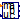
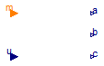
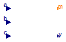

For all models in this package an FMU must be generated
Extends from Modelica.Icons.Package (Icon for standard packages).
| Name | Description |
|---|---|
|  ModelA | Nonlinear system of equations depending on discrete input |
| ModelB | Discrete and continuous equations |
Nonlinear system of equations depending on discrete input

Extends from Modelica.Blocks.Interfaces.BlockIcon (Basic graphical layout of input/output block).
| Type | Name | Description |
|---|---|---|
| output RealOutput | a | Real output a |
| output RealOutput | b | Real output b |
| output RealOutput | c | Real output c |
| input IntegerInput | m | Integer input m |
| input RealInput | u | Real input u |
Discrete and continuous equations

Extends from Modelica.Blocks.Interfaces.BlockIcon (Basic graphical layout of input/output block).
| Type | Name | Default | Description |
|---|---|---|---|
| Real | switch | 0.8 | Switch point |
| Type | Name | Description |
|---|---|---|
| input RealInput | a | Real input a |
| input RealInput | b | Real input b |
| input RealInput | c | Real input c |
| output IntegerOutput | m | Integer output m |
| output RealOutput | y | Real output y |